Introdução
Uma boa alimentação traz inúmeros benefícios para o corpo e a mente. Ela fornece os nutrientes essenciais que nosso organismo precisa para funcionar de maneira eficiente, ajudando a melhorar a energia, o humor e a concentração no dia a dia. Uma dieta equilibrada também fortalece o sistema imunológico, prevenindo doenças e promovendo a longevidade. Além disso, uma alimentação saudável contribui para o controle do peso, melhora a saúde cardiovascular e reduz o risco de condições como diabetes e hipertensão. Investir em uma nutrição adequada é um passo essencial para alcançar mais disposição, bem-estar e qualidade de vida.Resultados da pesquisa
Ao se cadastrar no site, o usuário é convidado a responder uma pesquisa, com o objetivo de promover a conscientização entre os visitantes. A seguir, apresentamos os resultados obtidos.
Consciência Corporal (%)
12 %
12 %
Atividade Física (%)
12 %
12 %
Alimentação Saudável (%)
12 %
12 %
Total de respostas:
12
12
Calculadoras
Existem algumas calculadoras que são úteis para calcular métricas nutricionais importantes para o seu desenvolvimento e consciência corporal, são bem simples e de fácil entendimento, veja abaixo as possíveis de serem realizadas: (É recomendado que todas sejam feitas)As calculadoras nutricionais desempenham um papel importante para quem busca uma alimentação equilibrada e otimizada para suas necessidades de saúde e bem-estar. Elas fornecem uma maneira simples e eficaz de monitorar a ingestão de nutrientes e calorias, ajudando a ajustar a alimentação de acordo com metas específicas.
Efetue o Login no site para utilizar as calculadoras

Índice de Massa Corporal (IMC)
O IMC (Índice de Massa Corporal) é uma medida usada para avaliar se
uma pessoa está dentro de um
peso
considerado saudável em relação à sua altura. Ele é calculado dividindo o peso (em quilogramas) pela
altura (em metros) ao quadrado. Embora o IMC seja amplamente utilizado, ele não leva em consideração
a
composição corporal, como a proporção entre gordura e músculo, nem fatores como idade, sexo ou nível
de
atividade física.
A Taxa Metabólica Basal (TMB) é a quantidade de energia (calorias)
que o corpo precisa para realizar suas
funções básicas enquanto está em repouso. Essas funções incluem respiração, circulação sanguínea,
regulação
da temperatura corporal, funcionamento dos órgãos e manutenção das células. Em outras palavras, a
TMB
representa a quantidade mínima de calorias que o corpo gasta para se manter vivo e funcional, sem
incluir
atividades físicas ou digestão de alimentos.

Taxa Matabólica Basal (TMB)

Ingestão Hídrica
Uma ingestão hídrica adequada é fundamental para o corpo e traz
inúmeras vantagens para o bom funcionamento do organismo. A água desempenha papéis essenciais nos
processos biológicos, regulando a temperatura corporal, facilitando o transporte de nutrientes, e
promovendo a circulação sanguínea. Ela também auxilia na digestão e no processo de absorção de
vitaminas e minerais, que são fundamentais para a saúde.
João Gabriel
Aluno de CCOOlá!
Minhas redes sociais:
Meu nome é João Gabriel, tenho 19 anos e sou estudante de Ciência da Computação na São Paulo
Tech School (SPTech). Minha paixão por tecnologia começou cedo: formado como Técnico em
Mecatrônica, tive meus primeiros contatos com programação e logo me interessei profundamente
pela área, levando-me a buscar um Bacharelado no segmento.
Além disso, sempre me interessei por nutrição, especialmente após adotar hábitos mais saudáveis
ao perceber a importância de uma boa alimentação. Os resultados positivos dessa mudança me
encantaram e despertaram um profundo interesse por essa área tão valiosa. Esse site reflete
minha dedicação em unir tecnologia e bem-estar.